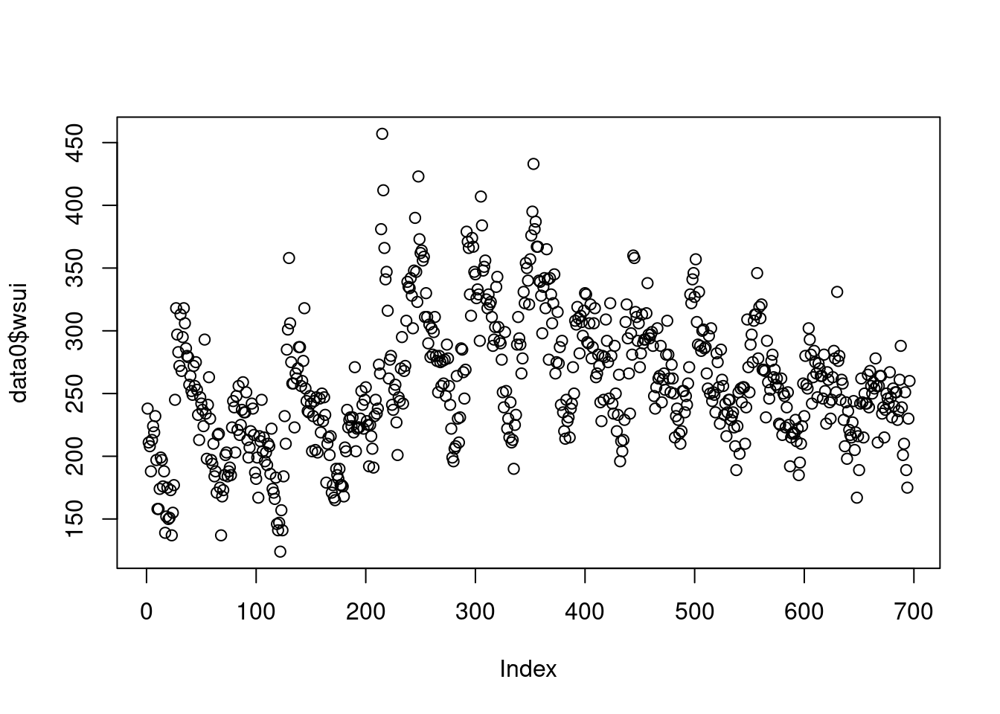
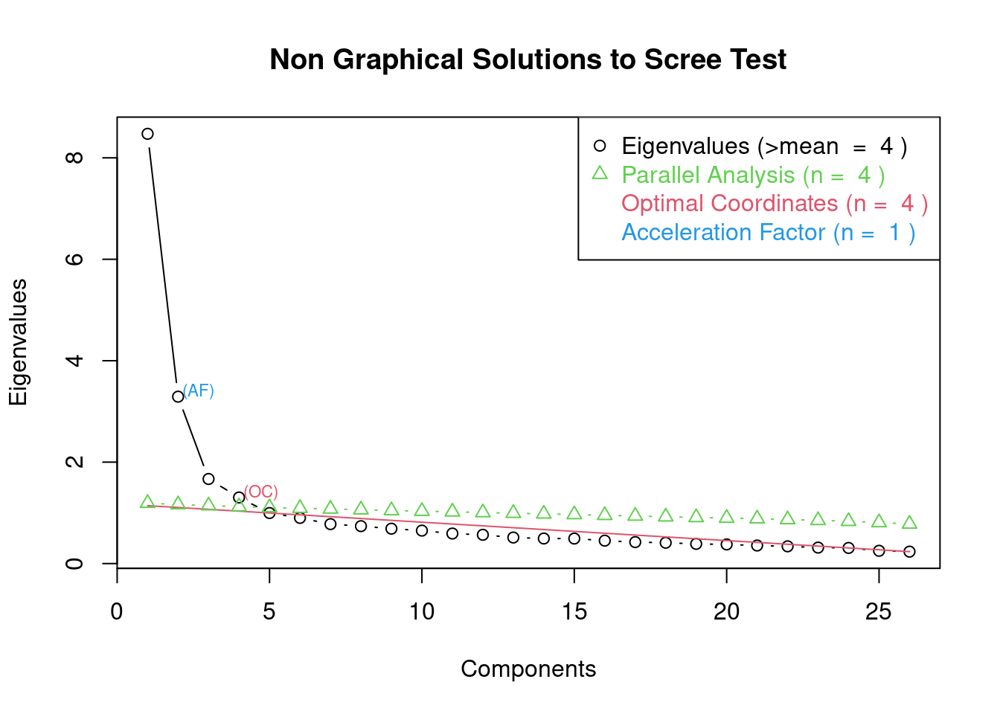
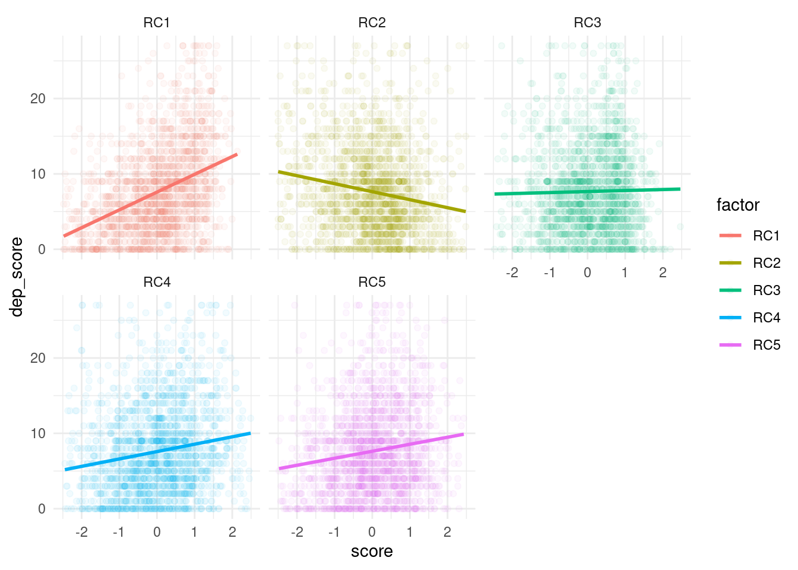

Chapter 10 job stress questionnaires
본 강의에서는 2014년 장세진 등이 연구한 한국형 감정노동 설문지의 연구 계발 중 감정노동 설문지 하부 구조 구성에 대한 내용입니다.
감정근로자를 대상으로한 질적 면담을 통해 총 26개 질적 항목이 도출되었고, 이를 조사 문항으로 변경하였고, 2014년 약 2000명의 고객 응대 근로자를 조사하였다. 이 중 변수를 축소할 수 있으지, 불필요한 변수가 있는지, 변수 사이에 일정한 특성이 있어 하부 구조를 만들수 있는지 여부를 판단하는 것이 실습 목표입니다.
10.1 설문지 개발
10.1.1 기본 R 준비
tidyverse 를 통해 대부분의 data step 과정을 수행할 것이며, 라벨 작업을 위해 labelled package를 이용할 것이다. spss 파일을 불러오기위해 haven package 사용할 것이다.
library(tidyverse)
library(labelled)
library(haven)10.1.2 basic data step
spss 파일인 data_n2221.sav를 불러 dat에 저장한다. 이후 처음부터 100번째 줄만 사용한다.
dat<-read_sav("data/jobstress/data_n2221.sav")
dat <-dat[, 1:100 ]look_for(dat, details = FALSE) %>% DT::datatable()10.1.3 설문지와 데이터 비교하기
설문지를 찾아보면 아래와 같이 감정노동 설문지가 있다. a1부터 a26까지 라밸을 붙여 기억하기 쉽게 하자.

감정노동설문지
10.1.4 변수에 라벨링 붙이기
a1 ~ a6 까지의 변수에 emotional labor Q를 1부터 26까지 라벨로 저장해보자. 참고로 레이블은 변수에 list 처럼 정보가 저장되어 변수별 list를 만들고 즉, an[1]에 emotional labor Q1을 저장하고 반복하면 된다.
an <- list()
for (i in 1:26) {an[i] <- paste('emotional labor Q', i, sep="")}
names(an) <- paste('a', 1:26, sep="")
var_label(dat) <- an
look_for(dat) %>% DT::datatable()b1… c1.. .변수는 고객 폭력 설문지이다. 따라서 이번 실습에서는 사용하지 않도록 하겠다. 시작이 b 또는 c로 시작되고 뒤에 숫자가 붙어 있는 변수는 모두 제거하려고 한다. (^는 맨 앞이란 뜻, \\d는 )
dat2 <- dat %>% select(!grep('^b|c\\d', names(dat)))10.1.5 결측값 제거
감정노동 설문지에서 결측값이 있는 경우 실습에서 제외 하도록 하자. 이제 분석을 위해 gg 라는 파일을 만들자 시작이 a이고 뒤에 숫자가 붙어 있는 변수는 감정노동 변수이다. 이때 NA가 포함되어 있는 것은 모두 지우고자 한다.
gg<-dat2 %>% drop_na(grep('^a\\d', names(dat2))) 10.2 주성분분석
10.2.1 주성분분석 간단 소개
주성분분석을 간단히 설명하면, 잠재적으로 적은 수의 관찰되지 않은 변수의 관점에서 관찰 된 상관 변수 간의 변동성을 설명하고자 하는 방법이다. 이때 잠재적으로 적은 수의 관찰되지 않은 변수가 요인(factor)가 된다-wikipedia. 즉 현재 26개의 감정노동 변수가 몇개의 요인으로 설명될수 있는지를 물어보자. 만약 2개의 요인 감정의 피로, 조직의 보호 같은 요인이 숨어 있다고 해보자. 그리고 2개의 요인이 전체 데이터를 한 70% 설명해 준다고 하자. 그러면 2개의 요인의 요약값으로 데이터를 해석하고 분석하는 것도 매우 효율적인 방법 중 하나일 것이다. 이렇게 되면
어떠한 설문문항은 감정의 피로는 높고 조직의 보호는 낮은 것으로 이해되고, 어떠한 설문문항은 감정의 피로도 높고 조직의 보호도 높은 것일 수 있다. 즉 \(X_1, X_2 . . .X_N\)의 변수는 요인(\(F_k\))(unobservable latent factors)로 인해 설명될 수 있다.
즉,
\[ X_1 = w_{1,0} + w_{1,1}F_1 ...w_{1,k}F_k + e_1 \\
X_2 = w_{2,0} + w_{2,1}F_1 ...w_{2,k}F_k + e_2 \\
..... \\
X_N = w_{N,0} + w_{N,1}F_1 ...w_{N,k}F_k + e_N \\
\]
여기서 \(k\)가 얼마일지에 대한 대답을 하는 과정 이기도 하다.
10.2.2 요인이 몇개면 좋을까?
설문지 항목을 읽어보고 몇개로 나누면 좋을지 생각해보자. 아까의 설문지 파일을 다시 보자.
| variable | Questionnaire |
|---|---|
| a1 | 1. 고객에게 부정적인 감정을 표현하지 않으려고 의식적으로 노력한다. |
| a2 | 2. 고객을 대할 때 회사의 요구대로 감정 표현을 할 수밖에 없다. |
| a3 | 3. 업무상 고객을 대하는 과정에서 나의 솔직한 감정을 숨긴다. |
| a4 | 4. 일상적인 업무수행을 위해서는 감정을 조절하려는 노력이 필요하다. |
| a5 | 5. 고객을 대할 때 느끼는 나의 감정과 내가 실제 표현하는 감정은 다르다. |
| a6 | 6. 공격적이거나 까다로운 고객을 상대해야 한다. |
| a7 | 7. 나의 능력이나 권한 밖의 일을 요구하는 고객을 상대해야 한다. |
| a8 | 8. 고객의 부당하거나 막무가내의 요구로 업무 수행의 어려움이 있다. |
| a9 | 9. 직장은 나의 상황보다는 고객의 입장만을 고려하도록 강요한다. |
| a10 | 10. 고객을 응대할 때 자존심이 상한다. |
| a11 | 11. 고객에게 감정을 숨기고 표현하지 못할 때 나는 감정이 상한다. |
| a12 | 12. 고객을 응대할 때 나의 감정이 상품처럼 느껴진다. |
| a13 | 13. 퇴근 후에도 고객을 응대할 때 힘들었던 감정이 남아 있다. |
| a14 | 14. 고객을 대하는 과정에서 마음의 상처를 받는다. |
| a15 | 15. 몸이 피곤해도 고객들에게 최선을 다해야 하므로 감정적으로 힘들다. |
| a16 | 16. 직장이 요구하는 대로 고객에게 잘 응대하는지 감시를 당한다(CC TV 등). |
| a17 | 17. 고객의 평가가 업무성과평가나 인사고과에 영향을 준다. |
| a18 | 18. 고객 응대에 문제가 발생했을 때, 나의 잘못이 아닌데도 직장으로부터 부당한 처우를 받는다. |
| a19 | 19. 직원들을 보호하기 위하여 고객들의 부당한 행위를 직장에서 모니터링(관찰, 녹음, 확인 등) 하고 있다. |
| a20 | 20. 고객 응대 과정에서 문제가 발생 시 직장에서 적절한 조치가 이루어진다. |
| a21 | 21. 고객 응대 과정에서 발생한 문제를 해결하고 도와주는 직장 내의 공식적인 제도와 절차가 있다. |
| a22 | 22. 직장은 고객 응대 과정에서 입은 마음의 상처를 위로받게 해준다. |
| a23 | 23. 상사는 고객 응대 과정에서 발생한 문제를 해결하기 위해 도와준다. |
| a24 | 24. 동료는 고객 응대 과정에서 발생한 문제를 해결하기 위해 도와준다. |
| a25 | 25. 직장 내에 고객 응대에 관한 행동지침이나 매뉴얼(설명서, 안내서)이 마련되어 있다. |
| a26 | 26. 고객의 요구를 해결해 줄 수 있는 권한이나 자율성이 나에게 주어져 있다. |
PCA (principal Components Anaysis)를 실행해 보자.
우선 분석 데이터의 이름을 gg로 바꾸었고, 이중 PCA를 돌릴 감정노동 변수만을 em으로 선정하자.
em <-gg %>% select(grep('^a\\d', names(gg)))
fit <-princomp(em, cor=TRUE)
summary(fit)## Importance of components:
## Comp.1 Comp.2 Comp.3 Comp.4 Comp.5
## Standard deviation 2.9109785 1.8140133 1.29145144 1.14149754 0.9981856
## Proportion of Variance 0.3259152 0.1265632 0.06414796 0.05011602 0.0383221
## Cumulative Proportion 0.3259152 0.4524785 0.51662643 0.56674246 0.6050646
## Comp.6 Comp.7 Comp.8 Comp.9 Comp.10
## Standard deviation 0.94878939 0.88188337 0.85890832 0.82933490 0.80598461
## Proportion of Variance 0.03462313 0.02991224 0.02837398 0.02645371 0.02498505
## Cumulative Proportion 0.63968768 0.66959992 0.69797390 0.72442761 0.74941266
## Comp.11 Comp.12 Comp.13 Comp.14 Comp.15
## Standard deviation 0.76934437 0.75306547 0.71665409 0.70291372 0.70214574
## Proportion of Variance 0.02276503 0.02181183 0.01975358 0.01900337 0.01896187
## Cumulative Proportion 0.77217769 0.79398952 0.81374310 0.83274647 0.85170834
## Comp.16 Comp.17 Comp.18 Comp.19 Comp.20
## Standard deviation 0.67203301 0.65055854 0.64059641 0.62269499 0.61420308
## Proportion of Variance 0.01737032 0.01627794 0.01578322 0.01491343 0.01450944
## Cumulative Proportion 0.86907866 0.88535660 0.90113982 0.91605325 0.93056269
## Comp.21 Comp.22 Comp.23 Comp.24 Comp.25
## Standard deviation 0.5965547 0.58295100 0.56112051 0.55494148 0.501662398
## Proportion of Variance 0.0136876 0.01307046 0.01210985 0.01184462 0.009679429
## Cumulative Proportion 0.9442503 0.95732074 0.96943059 0.98127521 0.990954641
## Comp.26
## Standard deviation 0.484952908
## Proportion of Variance 0.009045359
## Cumulative Proportion 1.000000000그림을 그려보자
plot(fit, type="lines")
abline(h=1, col="blue")
10.2.2.1 library nFactors 이용하기
library(nFactors)
ev <- eigen(cor(em)) # get eigenvalues
ap <- parallel(subject=nrow(em),var=ncol(em),rep=100,cent=.05)
nS <- nScree(x=ev$values, aparallel=ap$eigen$qevpea)
plotnScree(nS)
요인의 개수를 4개 또는 5개로 추천해 주고 있다. 여튼 4개 이상의 요인 구성해보고 시작해보자.
10.2.3 요인 고정 분석
library(psych)
fit <- principal(em, nfactors=4, rotate="varimax")
#print(fit, digits = 3, sort = TRUE)로딩값 0.4이상인 것을 하나의 동일한 요인으로 구분해보고, 우리의 생각과 비슷한지 관찰해 보자.
| Q | ques | RC1 | RC2 | RC3 | RC4 |
|---|---|---|---|---|---|
| a14 | 14. 고객을 대하는 과정에서 마음의 상처를 받는다. | 0.823 | -0.067 | 0.107 | 0.129 |
| a13 | 13. 퇴근 후에도 고객을 응대할 때 힘들었던 감정이 남아 있다. | 0.785 | -0.074 | 0.078 | 0.109 |
| a11 | 11. 고객에게 감정을 숨기고 표현하지 못할 때 나는 감정이 상한다. | 0.756 | -0.077 | 0.175 | 0.134 |
| a10 | 10. 고객을 응대할 때 자존심이 상한다. | 0.754 | -0.146 | 0.166 | 0.190 |
| a12 | 12. 고객을 응대할 때 나의 감정이 상품처럼 느껴진다. | 0.741 | -0.110 | 0.146 | 0.195 |
| a15 | 15. 몸이 피곤해도 고객들에게 최선을 다해야 하므로 감정적으로 힘들다. | 0.726 | -0.064 | 0.242 | 0.162 |
| a8 | 8. 고객의 부당하거나 막무가내의 요구로 업무 수행의 어려움이 있다. | 0.680 | -0.083 | 0.335 | 0.161 |
| a7 | 7. 나의 능력이나 권한 밖의 일을 요구하는 고객을 상대해야 한다. | 0.634 | -0.086 | 0.366 | 0.102 |
| a6 | 6. 공격적이거나 까다로운 고객을 상대해야 한다. | 0.598 | -0.025 | 0.426 | 0.054 |
| a9 | 9. 직장은 나의 상황보다는 고객의 입장만을 고려하도록 강요한다. | 0.544 | -0.201 | 0.304 | 0.321 |
| a23 | 23. 상사는 고객 응대 과정에서 발생한 문제를 해결하기 위해 도와준다. | -0.114 | 0.775 | 0.022 | -0.099 |
| a21 | 21. 고객 응대 과정에서 발생한 문제를 해결하고 도와주는 직장 내의 공식적인 제도와 절차가 있다. | -0.136 | 0.764 | -0.002 | 0.132 |
| a20 | 20. 고객 응대 과정에서 문제가 발생 시 직장에서 적절한 조치가 이루어진다. | -0.109 | 0.715 | 0.046 | 0.146 |
| a22 | 22. 직장은 고객 응대 과정에서 입은 마음의 상처를 위로받게 해준다. | -0.196 | 0.706 | -0.174 | -0.089 |
| a25 | 25. 직장 내에 고객 응대에 관한 행동지침이나 매뉴얼(설명서, 안내서)이 마련되어 있다. | -0.069 | 0.609 | 0.101 | 0.129 |
| a24 | 24. 동료는 고객 응대 과정에서 발생한 문제를 해결하기 위해 도와준다. | 0.069 | 0.581 | 0.079 | -0.137 |
| a26 | 26. 고객의 요구를 해결해 줄 수 있는 권한이나 자율성이 나에게 주어져 있다. | -0.055 | 0.575 | -0.159 | -0.191 |
| a3 | 3. 업무상 고객을 대하는 과정에서 나의 솔직한 감정을 숨긴다. | 0.209 | -0.031 | 0.769 | 0.075 |
| a1 | 1. 고객에게 부정적인 감정을 표현하지 않으려고 의식적으로 노력한다. | 0.146 | 0.060 | 0.729 | 0.069 |
| a2 | 2. 고객을 대할 때 회사의 요구대로 감정 표현을 할 수밖에 없다. | 0.225 | -0.017 | 0.664 | 0.207 |
| a4 | 4. 일상적인 업무수행을 위해서는 감정을 조절하려는 노력이 필요하다. | 0.235 | 0.051 | 0.664 | -0.017 |
| a5 | 5. 고객을 대할 때 느끼는 나의 감정과 내가 실제 표현하는 감정은 다르다. | 0.426 | -0.056 | 0.574 | 0.054 |
| a16 | 16. 직장이 요구하는 대로 고객에게 잘 응대하는지 감시를 당한다(CC TV 등). | 0.307 | -0.136 | 0.084 | 0.707 |
| a19 | 19. 직원들을 보호하기 위하여 고객들의 부당한 행위를 직장에서 모니터링(관찰, 녹음, 확인 등) 하고 있다. | 0.076 | 0.301 | -0.005 | 0.666 |
| a17 | 17. 고객의 평가가 업무성과평가나 인사고과에 영향을 준다. | 0.338 | -0.034 | 0.211 | 0.656 |
| a18 | 18. 고객 응대에 문제가 발생했을 때, 나의 잘못이 아닌데도 직장으로부터 부당한 처우를 받는다. | 0.406 | -0.268 | 0.131 | 0.588 |
library(psych)
fit5 <- principal(em, nfactors=5, rotate="varimax")
#print(fit5, digits = 3, sort = TRUE)로딩값 0.4이상인 것을 하나의 동일한 요인으로 구분해보고, 우리의 생각과 비슷한지 관찰해 보자.
| Q | ques | RC1 | RC2 | RC3 | RC4 | RC5 |
|---|---|---|---|---|---|---|
| a14 |
|
0.833 | -0.080 | 0.160 | 0.142 | 0.129 |
| a13 |
|
0.793 | -0.086 | 0.126 | 0.122 | 0.130 |
| a11 |
|
0.758 | -0.089 | 0.222 | 0.147 | 0.134 |
| a12 |
|
0.743 | -0.121 | 0.192 | 0.207 | 0.124 |
| a10 |
|
0.714 | -0.153 | 0.187 | 0.211 | 0.225 |
| a15 |
|
0.693 | -0.072 | 0.268 | 0.180 | 0.207 |
| a9 |
|
0.418 | -0.196 | 0.265 | 0.354 | 0.376 |
| a23 |
|
-0.101 | 0.775 | 0.026 | -0.108 | -0.039 |
| a21 |
|
-0.095 | 0.763 | 0.021 | 0.116 | -0.130 |
| a20 |
|
-0.022 | 0.708 | 0.100 | 0.121 | -0.234 |
| a22 |
|
-0.112 | 0.701 | -0.136 | -0.112 | -0.223 |
| a25 |
|
-0.128 | 0.617 | 0.067 | 0.135 | 0.119 |
| a24 |
|
-0.025 | 0.590 | 0.026 | -0.121 | 0.252 |
| a26 |
|
-0.058 | 0.578 | -0.169 | -0.192 | 0.020 |
| a3 |
|
0.198 | -0.043 | 0.797 | 0.073 | 0.059 |
| a1 |
|
0.120 | 0.050 | 0.743 | 0.068 | 0.082 |
| a2 |
|
0.194 | -0.026 | 0.678 | 0.210 | 0.099 |
| a4 |
|
0.168 | 0.046 | 0.654 | -0.006 | 0.205 |
| a5 |
|
0.371 | -0.064 | 0.579 | 0.068 | 0.210 |
| a16 |
|
0.252 | -0.130 | 0.077 | 0.721 | 0.126 |
| a17 |
|
0.232 | -0.025 | 0.176 | 0.679 | 0.257 |
| a19 |
|
0.121 | 0.300 | 0.036 | 0.654 | -0.149 |
| a18 |
|
0.318 | -0.261 | 0.108 | 0.611 | 0.231 |
| a7 |
|
0.384 | -0.071 | 0.254 | 0.161 | 0.705 |
| a6 |
|
0.352 | -0.010 | 0.317 | 0.110 | 0.693 |
| a8 |
|
0.459 | -0.071 | 0.244 | 0.215 | 0.641 |
10.3 요인 개수 정하기: 신뢰도 측면
10.3.1 신뢰도 값 (Cronbach alpha)
전체의 신뢰도 값은 `Cronbach alpha1를 구해보면
total_alpha <- em %>%
alpha(check.keys = TRUE) %>% summary() %>% tibble() ##
## Reliability analysis
## raw_alpha std.alpha G6(smc) average_r S/N ase mean sd median_r
## 0.9 0.9 0.93 0.26 9.2 0.0031 2.8 0.47 0.26total_alpha## # A tibble: 0 × 00.9로 매우 높다. 설문의 내적 신뢰도가 매우 높아 잘 구성된 설문으로 판단된다.
이와 마찬가지로, 각 5개 요인별 신뢰도를 구해서 비교해 보면 다음과 같다.
## [[1]]
## raw_alpha std.alpha G6(smc) average_r S/N ase mean
## 0.8999274 0.9018293 0.9295131 0.2610769 9.186341 0.003141005 2.827998
## sd median_r
## 0.4735525 0.2614902
##
## [[2]]
## raw_alpha std.alpha G6(smc) average_r S/N ase mean sd
## 0.9055774 0.9057706 0.8991453 0.5786279 9.612397 0.003203386 2.89193 0.723457
## median_r
## 0.5848336
##
## [[3]]
## raw_alpha std.alpha G6(smc) average_r S/N ase mean
## 0.8131309 0.8126849 0.8038001 0.3826398 4.338599 0.006332137 2.562161
## sd median_r
## 0.6179742 0.3435262
##
## [[4]]
## raw_alpha std.alpha G6(smc) average_r S/N ase mean sd
## 0.7944449 0.7975002 0.7656453 0.440608 3.938276 0.00720726 3.381537 0.5348358
## median_r
## 0.4384749
##
## [[5]]
## raw_alpha std.alpha G6(smc) average_r S/N ase mean sd
## 0.715695 0.7199323 0.6839464 0.3912243 2.570565 0.01046568 2.481662 0.7527246
## median_r
## 0.4126389
##
## [[6]]
## raw_alpha std.alpha G6(smc) average_r S/N ase mean sd
## 0.8698312 0.8699297 0.8189101 0.6903434 6.688153 0.00501236 3.12841 0.7631397
## median_r
## 0.6931711| model | raw_alpha | std.alpha |
|---|---|---|
| Total alpha | 0.900 | 0.902 |
| RC1 alpha | 0.906 | 0.906 |
| RC2 alpha | 0.813 | 0.813 |
| RC3 alpha | 0.794 | 0.798 |
| RC4 alpha | 0.716 | 0.720 |
| RC5 alpha | 0.870 | 0.870 |
이후 연구잘들이 이렇게 모인 것이 의미적으로도 타당하고, 수치적으로도 타당하면 설문지로서 내적 신뢰도를 확보했다고 볼수 있다.
10.4 요인값 활용하기
10.4.1 요인값 데이터화
요인값 (score)는 fit모델의 scores라는 list에 데이터 형식으로 저장되어 있다. 이를 gg 파일에 횡병합한다.
gg1 <- cbind(gg, fit5$scores)
head(gg1)## no_1 no_2 gender age education marriage job job_code
## 1 3 1 2 34 3 1 회사원 9
## 2 3 2 2 27 3 1 보상,상담 6
## 3 3 3 2 37 3 2 사무직 9
## 4 3 4 2 40 2 2 사무직 9
## 5 3 5 2 44 1 2 가입지원요원 6
## 6 3 6 2 38 3 2 근로복지공단 가입지원요원 12
## job_code5 day_hour year month type shift working_hour holiday holiday_hour a1
## 1 4 8 12 0 1 2 40 2 NA 4
## 2 1 9 2 0 1 2 40 2 NA 3
## 3 4 9 10 0 1 2 40 2 NA 4
## 4 4 8 18 0 1 2 35 2 NA 4
## 5 1 9 1 2 2 2 40 2 NA 4
## 6 4 9 1 2 2 2 40 2 NA 3
## a2 a3 a4 a5 a6 a7 a8 a9 a10 a11 a12 a13 a14 a15 a16 a17 a18 a19 a20 a21 a22
## 1 4 4 4 4 4 3 4 3 3 4 3 4 4 4 3 2 1 2 3 3 2
## 2 3 4 4 4 4 4 4 4 3 3 2 3 4 4 3 3 2 3 2 1 1
## 3 4 4 4 4 4 3 3 3 3 4 3 3 3 3 2 3 4 2 1 3 2
## 4 4 4 4 4 4 3 4 4 3 4 3 4 4 4 3 2 2 4 3 2 2
## 5 1 3 4 3 4 2 2 3 3 3 3 3 3 2 1 1 1 1 1 1 2
## 6 3 4 4 3 3 3 3 3 1 3 3 1 3 1 1 1 1 1 3 1 1
## a23 a24 a25 a26 d1 d2 d3 d4 d5 d6 d7 d8 d9 e1 e2 e3 e4 e5 f1 f2 f3 g1 g1_day
## 1 3 3 2 2 3 1 1 1 1 1 1 1 0 4 4 4 4 4 6 5 5 1 NA
## 2 1 3 1 2 1 1 1 1 2 0 0 0 0 4 4 4 4 4 4 8 9 1 NA
## 3 3 3 3 2 2 2 1 1 1 1 1 0 0 3 3 3 3 4 5 10 7 2 NA
## 4 2 4 3 4 1 1 0 1 1 0 0 0 0 4 4 3 4 4 9 10 10 2 NA
## 5 2 2 1 1 1 1 1 1 0 1 0 0 1 2 2 2 2 3 5 8 6 1 NA
## 6 2 3 3 1 1 1 1 1 2 0 0 0 0 3 3 3 2 4 6 8 7 1 NA
## g1_1 g2 g2_day g2_1 g3 g3_day g4 g5 g6 g6_1 age_group workhour new_month
## 1 NA 1 NA NA 2 NA 2 4 1 NA 2 2 0.0000000
## 2 NA 1 NA NA 2 NA 2 3 1 NA 1 2 0.0000000
## 3 1 2 NA 1 2 NA 1 4 1 NA 2 2 0.0000000
## 4 1 1 NA NA 2 NA 2 3 1 NA 3 1 0.0000000
## 5 NA 1 NA NA 1 NA 2 2 1 NA 3 2 0.1666667
## 6 NA 1 NA NA 1 NA 2 3 1 NA 2 2 0.1666667
## new_year RC1 RC2 RC3 RC4 RC5
## 1 12.000000 1.41391758 0.2697825 1.06493093 -1.2119756 -0.50045351
## 2 2.000000 0.29155505 -1.3583095 0.06978903 -0.1336951 1.00758714
## 3 10.000000 0.08621152 -0.2683814 1.02177770 -0.1138303 0.23768768
## 4 18.000000 1.30583594 0.6955646 0.68449865 -0.3480365 0.07637027
## 5 1.166667 0.49545461 -1.7340666 -0.31311884 -2.4465539 -0.62733016
## 6 1.166667 -1.13527184 -1.0465152 0.72011247 -1.6794867 0.1720706710.4.2 우울증 점수 (PHQ-9)
PHQ-9 설문지가 d1~d9까지있고, 우선 단순 합으로 계산한다(9번 문항의 별도 가중치 고려하지 않음).
gg1 %>% select(grep('^d\\d', colnames(.))) %>%
rowSums(.) ->
gg1$dep_score 5개의 factor score와 PHQ-9의 총합의 상관관계를 분석해 본다.
gg1 %>% select(no_2, dep_score, grep('RC', colnames(.))) %>%
dplyr::rename(ID = no_2) %>% drop_na() %>%
gather (key = factor, value=score, RC1:RC5) %>%
filter (score < 2.5 & score >-2.5) %>%
ggplot (aes(x = score, y =dep_score, group=factor)) +
geom_point (aes(color = factor), alpha=0.05)+
geom_smooth(aes(color = factor), method='lm', se=F) +
facet_wrap (factor ~.) +
theme_minimal ()
10.4.3 요인별 사용 방법
R1은 양의 상관관계, RC2는 음의 상관관계, RC3는 특이 사항 없고, RC4, RC5는 양의 상관관계가 있다. 각 항목별로 기울기 등 관련성의 특성이 다르므로 각각 사용하는 것이 좋겠다. 모두 합산하기 보다는 각 요인별로 설문지의 값을 더하고 이것을 이용하자는 것이다. R1은 주로 감정의 소진, R2는 감정노동 보호체계 이런 식으로 나타낼 수 있다. 연구자가 의도에 맞게 명명을 하면 된다.
10.4.4 과제: 소진 증후군과 감정노동
소진 증후군의 설문문항 5개를 더하여 총점인
burn_out_score라는 변수를 구하시오.burn_out_score 와 각 factor 요인간의 선형 상관관계를 그림으로 그리시오.
regression coefficient의 절대값이 가장 큰 것 요인은?
각 factor 요인을 따로 사용하는 것이 좋을지 같이 합산해서 같이 사용하는 것이 좋을지 의견을 내시요.
10.5 Indirect effect
본 강의에서는 2014년 장세진 등이 연구한 한국형 감정노동 설문지의 연구 계발 중 감정노동 설문지 하부 구조 구성에 대한 내용이다. 감정근로자를 대상으로한 질적 면담을 통해 총 26개 질적 항목이 도출되었다. 이를 조사 문항으로 변경하였고, 2014년 약 2000명의 고객 응대 근로자를 조사하였다. 이 중 변수를 축소할 수 있으지, 불필요한 변수가 있는지, 변수 사이에 일정한 특성이 있어 하부 구조를 만들수 있는지 여부를 판단하는 것이 실습 목표이다. 요인분석 이전까지의 Data step은 저번 강의를 참조하고, 이번 강의에서는 Data step에서 필요한 부분만 시행하겠다.
필요한 library를 불러오자
library(diagram)
library(mediation)data <- c(0, "'path B'", 0,
0, 0, 0,
"'path C'", "'path A'", 0)
M<- matrix (nrow=3, ncol=3, byrow = TRUE, data=data)
plot<- plotmat (M, pos=c(1,2),
name= c( "burnout","Engaging \nout of control", "Depression"),
box.type = "rect", box.size = 0.12, box.prop=0.5, curve=0)
10.5.0.1 첫번째 testing total effect
gg1 <-gg1 %>%
mutate(burnout = e1+e2+e3+e4+e5) %>%
filter(!is.na(burnout), !is.na(dep_score), !is.na(RC3))path A 의 회귀 분석 수행하고
\[ Depression = b_{0} + b_{1}RC1 + e \]
fit.T <-
gg1 %>%
lm (data=.,
dep_score ~ RC5)
summary(fit.T)$coeff %>% kable()| Estimate | Std. Error | t value | Pr(>|t|) | |
|---|---|---|---|---|
| (Intercept) | 7.597578 | 0.1291604 | 58.82283 | 0 |
| RC5 | 0.877671 | 0.1307459 | 6.71280 | 0 |
10.5.0.2 두번째 (mediator on X)
두번째는 어려운 고객을 상대하는 것인 매개변수로 여겨지는 소진을 어떻게 설명하는지 분석하는 것이다.
\[ Burnout = b_{0} + b_{2}RC1 + e \]
fit.M <-
gg1 %>%
lm (data=.,
burnout ~ RC5)
summary(fit.M)$coeff %>% kable() | Estimate | Std. Error | t value | Pr(>|t|) | |
|---|---|---|---|---|
| (Intercept) | 14.2992138 | 0.0927035 | 154.246717 | 0 |
| RC5 | 0.7289394 | 0.0938415 | 7.767772 | 0 |
10.5.0.3 세번째 (Y on X and Mediator)
\[ Depression = b_{0} + b_{3} Burnout +b_{4} RC1 + e \]
fit.Y <-
gg1 %>%
lm (data=.,
dep_score ~ burnout + RC5)
summary(fit.Y)$coeff %>% kable()| Estimate | Std. Error | t value | Pr(>|t|) | |
|---|---|---|---|---|
| (Intercept) | -5.2686545 | 0.3585568 | -14.694057 | 0.0000000 |
| burnout | 0.8997860 | 0.0241078 | 37.323484 | 0.0000000 |
| RC5 | 0.2217815 | 0.1013842 | 2.187534 | 0.0288221 |
10.5.0.4 Causal Mediation analysis
mediation페키지의 mediate는 ACE, average causal mediaton effects와 ADE, a direct effect 를 계산하고 그 값이 0이 아닌지의 귀무가설을 bootstrapping 방법으로 계산해 준다. 본 실습에서는 상기 방법에 대한 자세한 내용은 생략하며, 실습을 중심으로 진행한다.
exp <-
mediate(fit.M,
fit.Y,
treat = 'RC5', # 독립변수
mediator = 'burnout', # 매개변수
boot = TRUE,
sims = 500)
summary(exp)##
## Causal Mediation Analysis
##
## Nonparametric Bootstrap Confidence Intervals with the Percentile Method
##
## Estimate 95% CI Lower 95% CI Upper p-value
## ACME 0.6559 0.4767 0.83 <2e-16 ***
## ADE 0.2218 0.0582 0.41 0.012 *
## Total Effect 0.8777 0.6444 1.12 <2e-16 ***
## Prop. Mediated 0.7473 0.5748 0.92 <2e-16 ***
## ---
## Signif. codes: 0 '***' 0.001 '**' 0.01 '*' 0.05 '.' 0.1 ' ' 1
##
## Sample Size Used: 1950
##
##
## Simulations: 500앞서 분석한 결과에서 b1 = 0.8776, p <0.001, b2 = 0.7289, p <0.001, b3 = 0.90, p <0.001, b4 = 0.22, p = 0.03를 기억하자. 지금 분석한 결과에서 Total Effect 0.8777 은 b1으로 어려운 고객 상대가 우울에 미치는 회귀계수이다. ADE 0.22는 b4로 3번째 모델에서 소진과 어려운 고객상대가 모형에 동시에 존재할 때 우울에 대한 감정노동 요인의 회기계수이다. 이것을 direct effect로 부른다. Total Effect에서 direct effect를 뺀 값은 0.66이고 이 값이 ACME가 된다. 해석에서 가장 중요한 부분은 b1에서 b4를 뺀 부분이 ACME라는 것이다. 또한 0.88에서 0.22로 0.66 만큼 줄었고 그 값에 대한 p value 가 0.05보다 작다는 것이다. 즉 번아웃의 매개효과의 크기가 크고 통계적으로 유의한 수준으로 존재한다.
10.5.0.5 소결
설문지를 개발하여 나타나는 요인들을 사용할 때 주의할 점 중 하나가 매개효과에 관한 것이다. 우리가 예상했던 설문지안에는 여러 요소가 들어 있고 어떤 요소는 스트레스의 원인/반응/매개 중에 하나에 특화된 것이 있다. 예를 들어 원인은 가끔 조직적/사회적인 것을 조사하며, 반응은 매우 생물학적인 것을 대변한다. 따라서 원인과 반응간에 매개변수가 필요할 수 가 있다. 상기 매개변수를 찾는 다면, 스트레스 원인이 건강영향을 일으키는데 중재할 수 있는 지식을 발굴해 낼 수 있다.